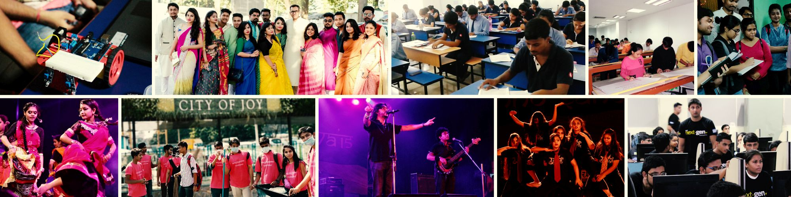

ABOUT TIU
Techno India University, West Bengal is the first private university of the state of West Bengal having more than 7000 students spread across different streams of Engineering, Business Studies, Basic Sciences, Pharmacy, Law along with several other courses on emerging technologies like Blockchain, IoT, Automation, Data Science, etc. Established in 2013, TIU is the flagship university of Techno India Group which is the largest educational conglomerate in Eastern India having 22 colleges, 4 universities, 12 B-schools, 25 schools and 2 upcoming medical colleges spread across the nation. We have an in-house Centre of Excellence (CoE) for SAP, IoT, Robotic Process Automation, Intel FPGA, Pegasystems and IBM Bluemix to facilitate the young minds with the best opportunities. TIU has also formed Eastern India’s first mentorship-driven incubation center named Technopreneurs Surrogate Ventures Pvt. Ltd. in order to give the best shape to the budding entrepreneurs and startups.
